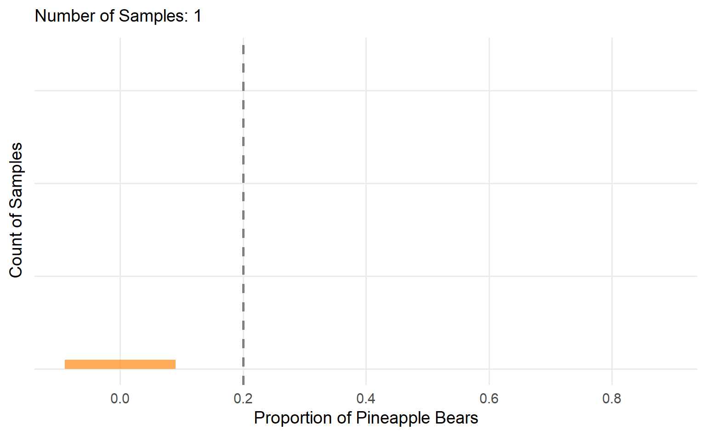
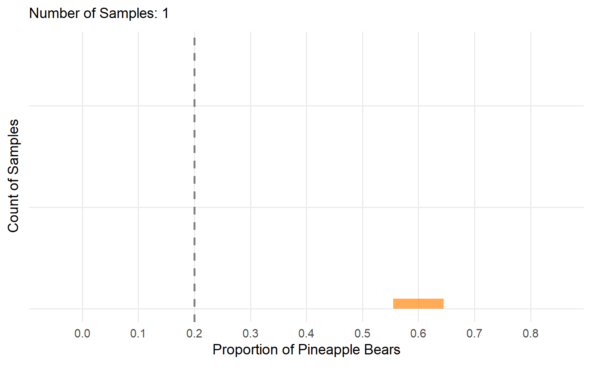
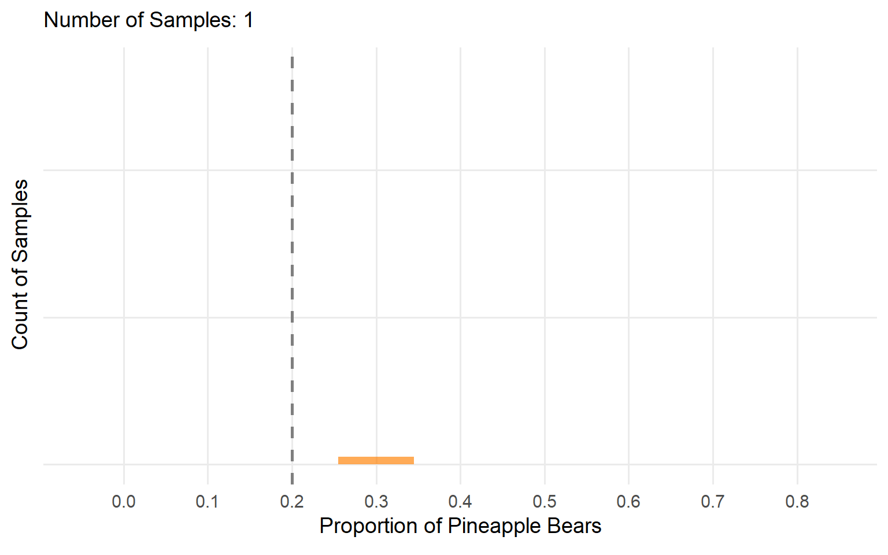
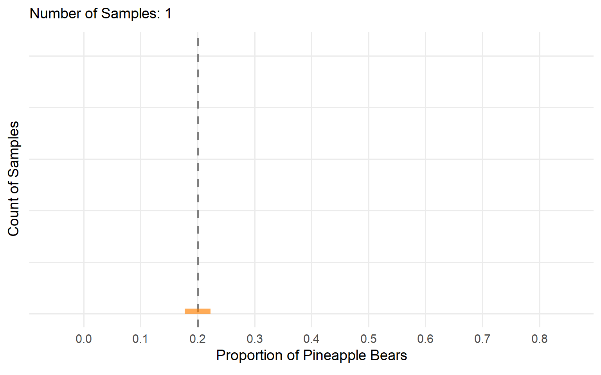
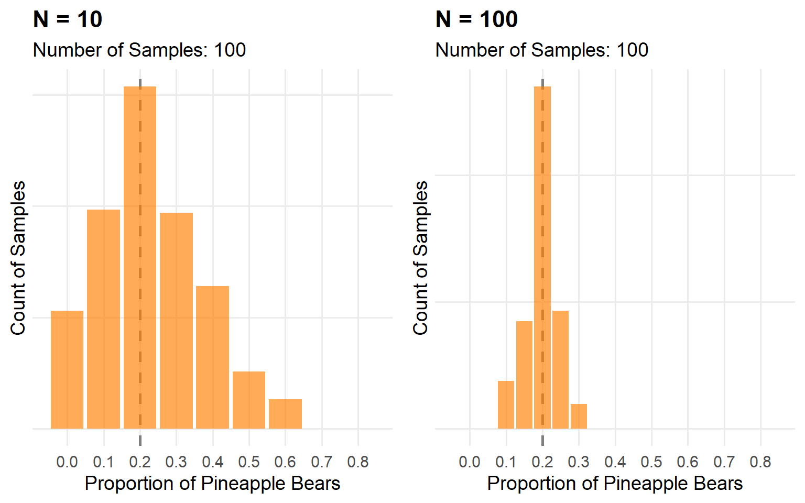
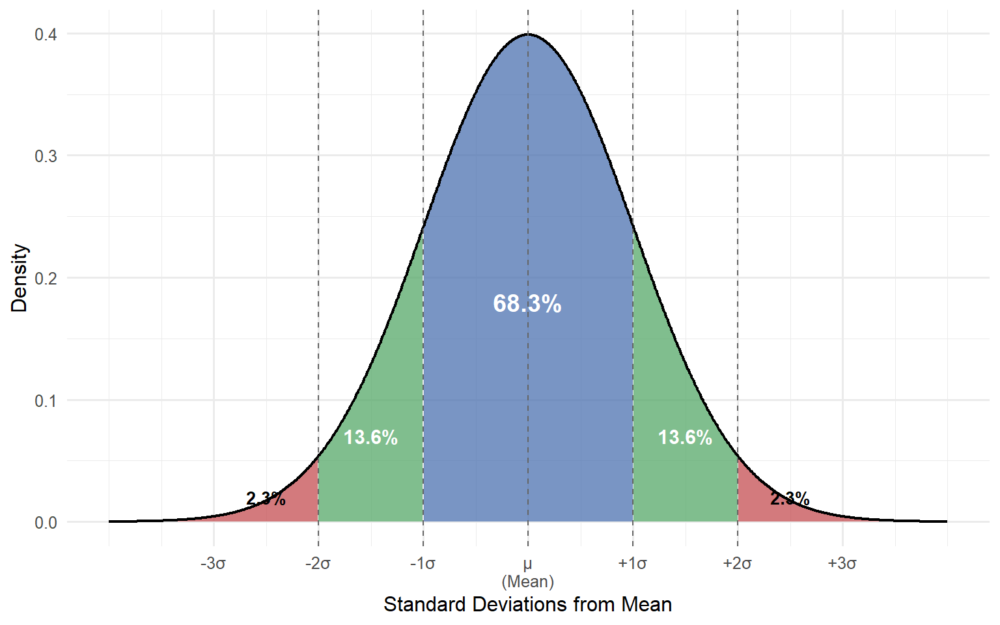
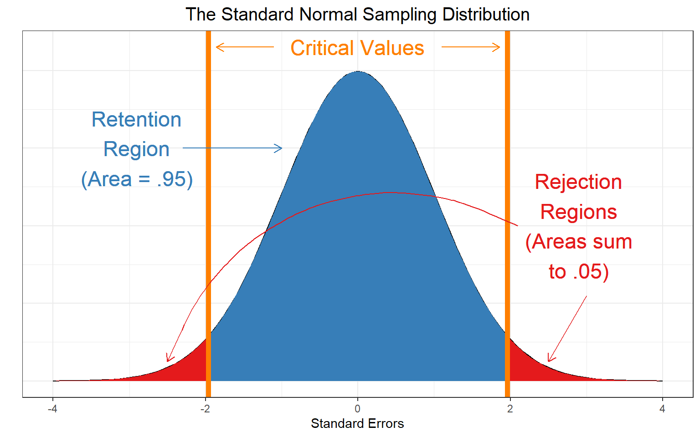
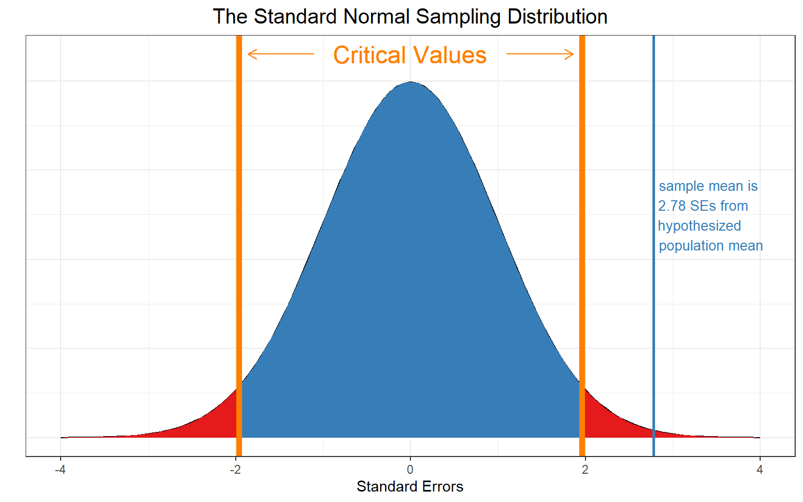
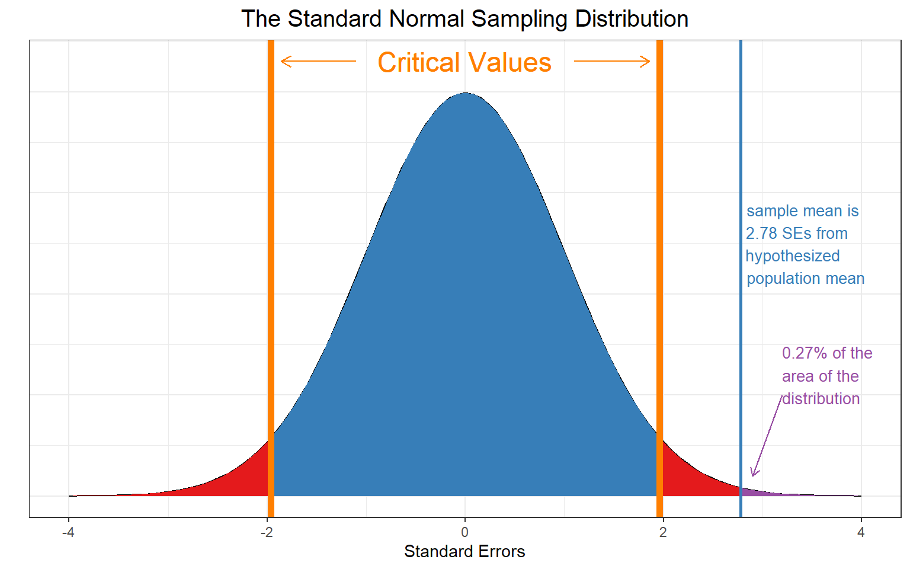
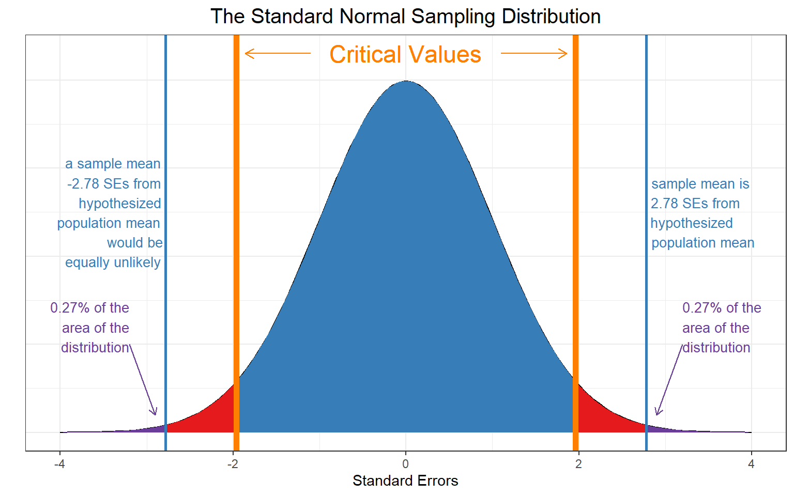

To get the proportion we just divide the number of successes by the sample size
Simulating Again
We can repeat the process and see how the results change
…Again
…And Again
Better yet, let’s graph the cumulative proportions (sample means) as we repeatedly sample
Repeated Samples (N = 5)

Now let’s bump up the sample size
Repeated Samples (N = 10)

Again….
Repeated Samples (N = 25)

And again….
Rep. Samples (N = 100)

Thoughts?
Comparing Sample Sizes

What about now?
The Central Limit Theorem
As \(N\) increases:
- Sampling distribution becomes narrower
- Sampling distribution becomes more symmetrical/bell-shaped
- Applies to (nearly) all sampling distributions
- Exception: Some distributions do not have finite variance
- These are cases where outliers that are orders of magnitude larger than the mean happen more often than would be expected
- “Heavy tailed” distributions (e.g. Cauchy)
- Otherwise, as \(N\) (sample size) \(\rightarrow \infty\)
- Mean of sample statistics converges on population parameter
- SD of sample statistics = standard error = \(\sigma / \sqrt{N}\)
- Sampling distribution becomes increasingly normal
The Normal Distribution
\[f(x) = \frac{1}{\sqrt{2\pi \sigma^2}}e^{\frac{(-x-\mu)^2}{2\sigma^2}}\]
Parameters
- \(\mu\): Mean
- \(\sigma^2\): Variance
- Alternatively \(\sigma\): Standard deviation
Three Blue One Brown
How Does This Help?
- For most statistics we care about, the distribution of those statistics becomes normal in in repeated samples, as long as the sample size is large enough
- The more symmetrical the ordinary probability distribution, the more normal the sampling distribution even in smaller samples
- The more skewed the ordinary distribution, the less normal the sampling distribution in smaller samples
- Need a larger sample for sampling distribution to become more normalish
- If we can assume statistics are normally distributed, we can unlock a lot of ways to make inferences using some well-known properties of the normal distribution
The Normal Distribution
\[f(x) = \frac{1}{\sqrt{2\pi \sigma^2}}e^{\frac{(-x-\mu)^2}{2\sigma^2}}\]
Parameters
- \(\mu\): Mean
- \(\sigma^2\): Variance
- Alternatively \(\sigma\): Standard deviation
Normal Densities

We can “slice up” the normal distribution into densities within 1 and 2 standard deviations
Normal Distribution Properties
- 68% of observations are within 1 SD of the mean
- 96% of observations are within 2 SD of the mean
Any number that is more than 2 SDs from the mean would show up infrequently in this distribution
- Not never! But it would be uncommon
- If we know what the mean and SD of our sampling distribution are, it can let us say something about how how (un)likely it would for a statistic to really belong to this distribution
Sampling Scorers
Let’s imagine:
- I sample a group of 44 NBA basketball players
- On average, they score 14.5 points per game
- I want to test the hypothesis that on average, the population I sampled from scores 12 points per game
- In the population, the standard deviation of basketball player points per game is 6
- 14.5 is not 12! But how do I know how likely or unlikely this statistic would be if my sampling distribution were the true sampling distribution?
Standard Errors
A standard error is our term for the standard deviation of a sampling distribution.
<<<<<<< Updated upstreamI mentioned that as \(N\) increases a sampling distribution becomes narrower. In fact, under the CLT, we know exactly how much narrower it becomes for the sampling distribution of the mean!
=======I mentioned that As \(N\) increases a sampling distribution becomes narrower. In fact, under the CLT, we know exactly how much narrower it becomes for the sampling distribution of the mean!
>>>>>>> Stashed changes\[\text{Standard Error (SE) of the mean} = \frac{\sigma}{\sqrt{N}}\]
More precisely, the squared standard error is the variance of the ordinary distribution proportional to the sample size
\[\text{SE}^2 = \frac{\sigma^2}{N}\]
Standard Error of Scorers
Therefore, if I know my population of NBA scorers has a standard deviation of 6, a sampling distribution of means for \(N = 44\) from this population would have
<<<<<<< Updated upstream\[SE = \frac{6}{\sqrt{44}} = 0.90\]
=======\[SE = \frac{6.5}{44} = 0.90\]
>>>>>>> Stashed changesThis means, if my population has a mean of 12, I would expect
- 68% of samples to have a sample mean within 1 SE of the population mean: \(12 \pm 0.90 = [11.10, 12.90]\)
- 96% of samples to have a sample mean within 2 SEs of the population mean: \(12 \pm 2 \times 0.90 = [10.20, 13.80]\)
\(Z\)-transformations
<<<<<<< Updated upstream- \(Z\)-score transformation: converting raw data or statistics into standard deviation units
- General formula:
\[Z = \frac{x-\mu}{\sigma}\]
What exactly are \(Z\)-scores?
Sampling \(Z\)’s
We can also transform our statistic (sample mean) into a \(Z\)-score for our hypothesized sampling distribution
-
=======
- \(Z\)-score transformation: converting raw data or statistics into standard deviation units >>>>>>> Stashed changes
- We are going to transform our sample mean, \(\bar{x}\), based on the mean and standard deviation (standard error) for our proposed sampling distribution
- \(Z = \frac{\bar{x} - \mu}{\text{SE}} = \frac{14.5 - 12}{0.90} = 2.78\)
We can also transform our statistic into a \(Z\)-score for our hypothesized sampling distribution
Interpretation: Our sample (14.5) mean is 2.78 SEs (SDs) larger than the proposed population mean (12)
How (Un)likely?
We can use this information to determine exactly how unusual our statistic is.
If we repeatedly sampled 44 NBA players with mean points per game \(\mu = 12\) and SD \(\sigma = 6\), only 0.27% of those samples would have a sample mean \(\bar{x} = 14.5\) or larger.
Because the normal distribution is symmetric, we also might consider the possibility that a random sample would be equally surprising in the opposite direction and say only 0.54% of sample means would have a magnitude at least this far from the population mean.
The Standard Normal Distribution

The standard normal distribution is “scale free” (units are standard deviations).
Our Statistic

This result would be very surprising if our hypothesis \(\mu = 12\) were true!
Our Statistic’s Area

Equally Unlikely Outcome

NHST
This is the core logic of Null Hypothesis Significance Testing (NHST):
- Propose a sampling distribution
- Collect data
- Calculate a statistic
- Calculate what percentage of statistics would have a magnitude at least as extreme as the one you collected
- Draw a conclusion
- Ronald Fisher proposed setting \(\alpha = .05\)
- Arbitrary cutoff to decide whether a statistic is surprising enough to conclude the null hypothesis is likely false
- Proper Interpretation: For all true null hypotheses, I’m willing to incorrectly reject them 5% of the time (make Type I Error, more later!)
Hypothesis and Test
<<<<<<< Updated upstreamSet up a null hypothesis \(H_0\)
\(H_0: \mu_{PPG} = 12\)
Set up alternative hypothesis \(H_a\)
\(H_a: \mu_{PPG} \neq 12\)
Conducting Test
- Construct sampling distribution
- Calculate test statistic
- Determine how unlikely test statistic is for sampling distribution
- If \(P(\text{statistic}) < .05\), reject null hypothesis.
- For a “two-tailed” test (e.g. a \(Z\)-test) we multiply by two to account for possibility that under the proposed sampling distribution the statistic was equally likely to have been above or below \(\mu\)
\(Z\)-test in APA
Congratulations! We’ve just learned how to do our first statistical test: a \(Z\)-test
Based on a sample of \(N = 44\) NBA players, we conduced a \(Z\)-test to test the null hypothesis that they came from a population with \(\mu = 12\) points per game, assuming that \(\sigma = 6\). Our sample mean scored \(\bar{x} = 14.5\) points per game, \(Z = 2.78, p = .003\). We reject the null hypothesis that the population mean from which this sample was drawn had \(\mu = 12\) points per game with known \(\sigma = 6\).